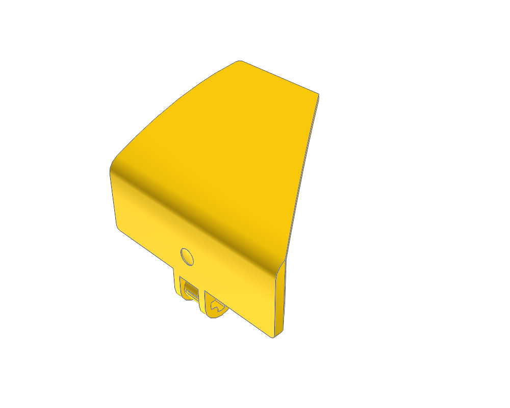
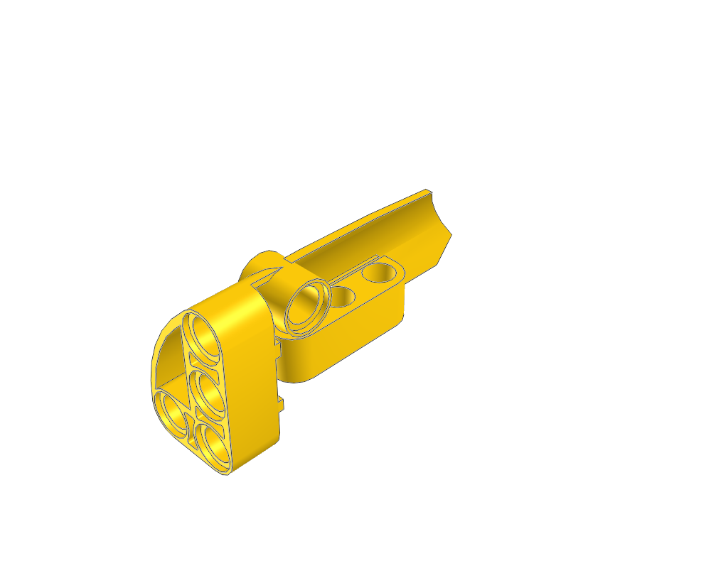
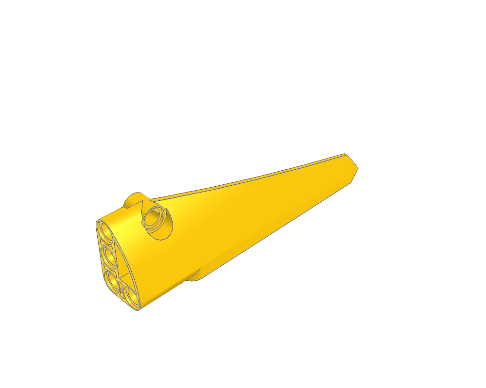
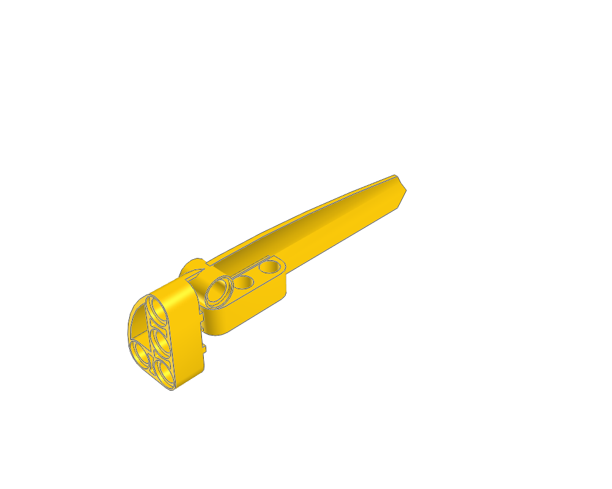
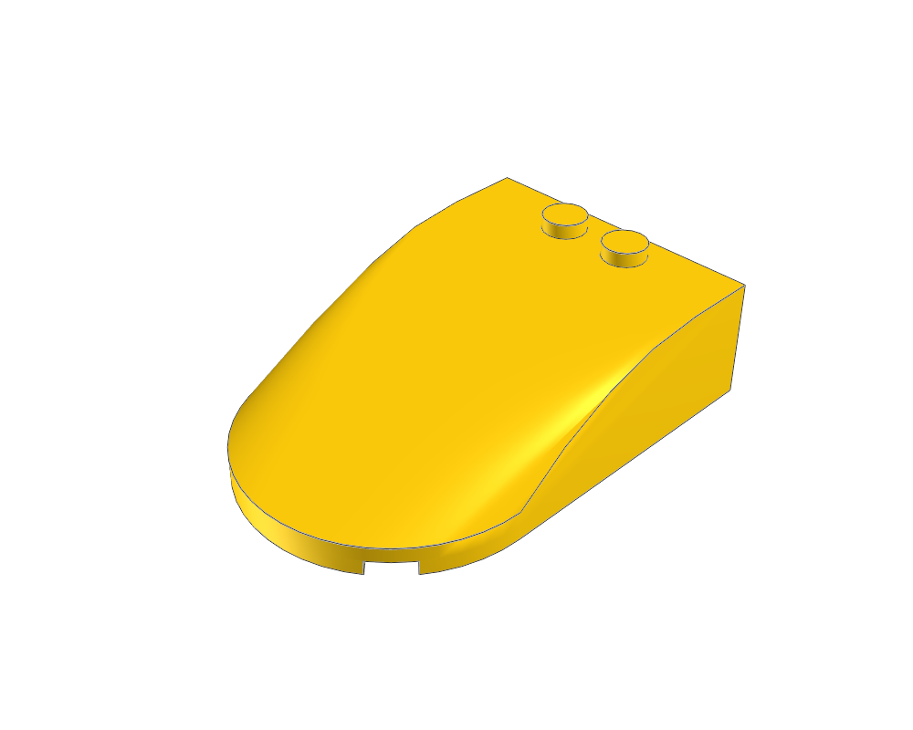
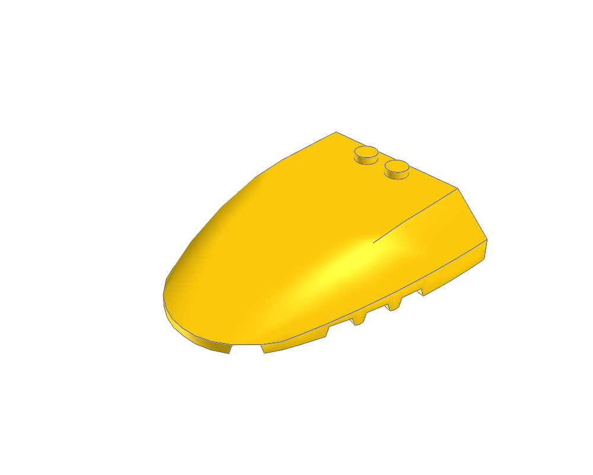
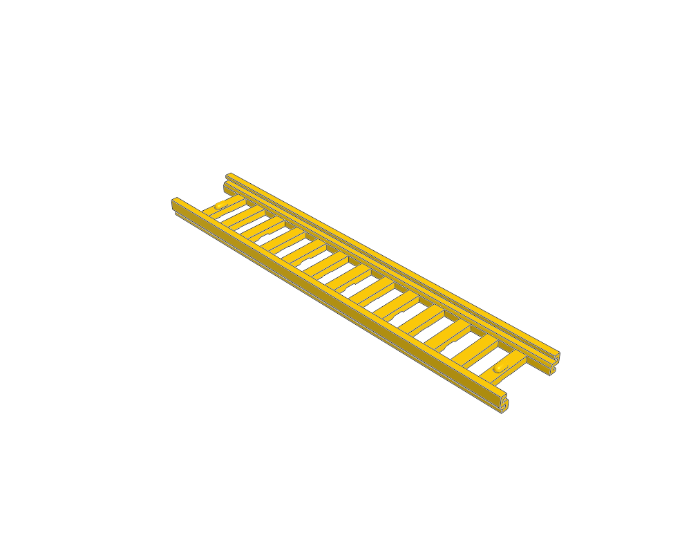
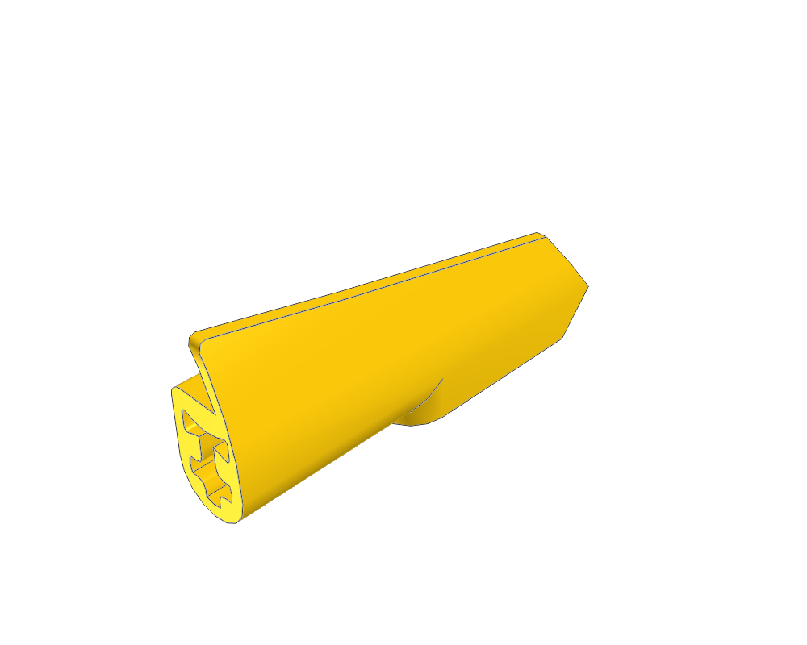
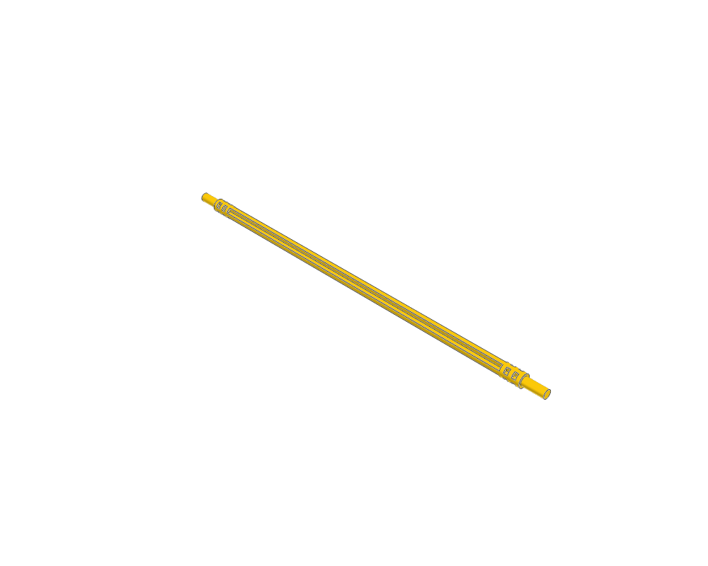

Technic Panel Bent 4 x 5 x 5 Tapered Right #71
8027280272.dat · 100 × 78 × 79 LDU
Inspect sourceActual library geometry. Each view is fitted independently: compare the listed dimensions, not image size. Bounds include studs and decoration; they are not stacking heights.

8027280272.dat · 100 × 78 × 79 LDU
Inspect source6819668196.dat · 100 × 37.4 × 258 LDU
Inspect source66096609.dat · 39 × 99 × 135.77 LDU
Inspect source
6439164391.dat · 39.0005 × 59.0002 × 136 LDU
Inspect source
6468164681.dat · 39 × 59.0002 × 216 LDU
Inspect source
6439364393.dat · 39 × 59.0002 × 216 LDU
Inspect source
1897318973.dat · 80 × 36 × 120 LDU
Inspect source
8022280222.dat · 120 × 36 × 139.879 LDU
Inspect source
4207a4207a.dat · 280 × 12.5 × 52 LDU
Inspect source1511815118.dat · 320 × 12.5 × 52 LDU
Inspect source
1194711947.dat · 18.0005 × 39.69 × 96 LDU
Inspect source
3223532235.dat · 380 × 12 × 12 LDU
Inspect source